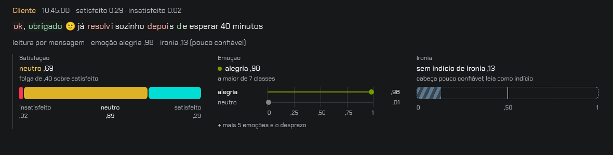
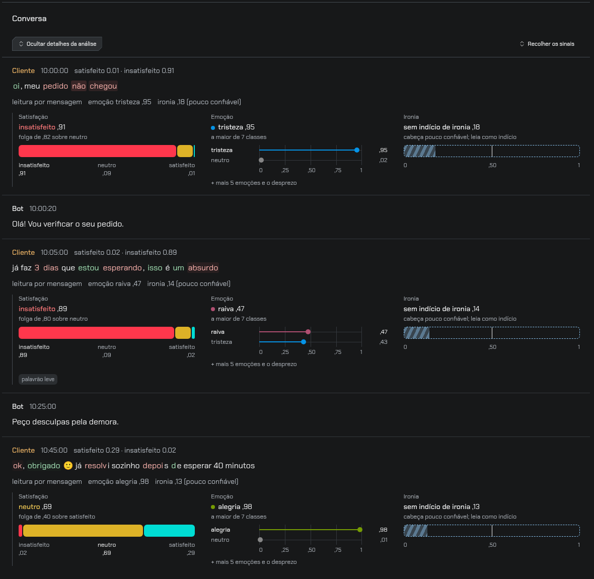
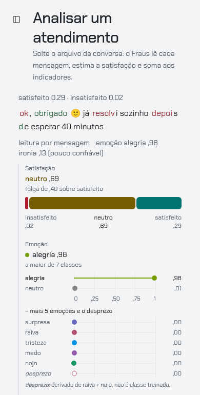
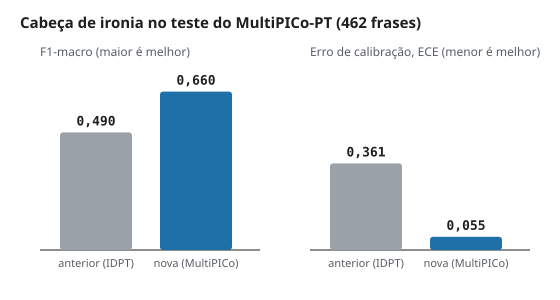
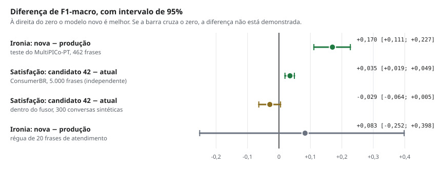

Novidades de 13/11/2026¶
Três mudanças nesta atualização: o leitor de ironia que está no ar foi trocado por um melhor, a tela que mostra a leitura de cada fala foi redesenhada, e um candidato a novo leitor de satisfação foi medido e não foi adotado. Esta página mostra as imagens e os números de cada uma.
O que não mudou
Nenhuma nota, categoria ou NPS mudou. A ironia é mostrada por mensagem e não entra na conta da nota; os leitores de satisfação e de emoção e o fusor continuam os mesmos.
1. Leitura da fala em três gráficos¶
Antes, satisfação, emoção e ironia dividiam uma única régua, com dez linhas iguais. Agora cada pergunta tem o seu gráfico:
- Satisfação: uma faixa dividida em três partes (insatisfeito, neutro, satisfeito). O tamanho de cada parte é a probabilidade daquela classe.
- Emoção: uma linha com um ponto na régua de 0 a 1, da emoção mais forte para a mais fraca. As demais abrem em "mais emoções".
- Ironia: um medidor tracejado com a marca em 0,50. O tracejado avisa que essa é a leitura menos confiável das três.

Na tela Analisar, os gráficos aparecem abertos embaixo de cada fala do cliente, sem precisar clicar:

No celular os gráficos ficam um embaixo do outro; a imagem mostra os dois primeiros no tema claro:

As imagens foram feitas com uma conversa de exemplo, escrita para o teste, lida pelo motor real numa instalação local. Não são atendimentos de clientes.
Um exemplo do limite do sistema
Na última fala da imagem, "ok, obrigado 🙂 já resolvi sozinho depois de esperar 40 minutos", o leitor de emoção respondeu alegria e o de ironia não viu indício. É o tipo de frase que motivou o projeto, e os leitores por mensagem ainda erram nela. Ver Limitações.
2. Leitor de ironia novo no ar¶
O leitor de ironia que estava publicado era o de agosto, treinado em um conjunto de tweets em que a fonte entregava a resposta (ver Ironia: corpus e régua). Ele foi trocado pelo leitor treinado no MultiPICo, um conjunto de respostas de redes sociais.
Os dois foram medidos com os mesmos arquivos que rodam no servidor:

| Teste | Frases | Leitor anterior | Leitor novo | Diferença de F1 [intervalo de 95%] |
|---|---|---|---|---|
| MultiPICo-PT | 462 | F1 0,490 · ECE 0,361 | F1 0,660 · ECE 0,055 | +0,170 [+0,111; +0,227] |
| Régua de 20 frases de atendimento | 20 | F1 0,437 | F1 0,520 | +0,083 [−0,252; +0,398] |
F1 vai de 0 a 1 e quanto maior, melhor. ECE mede o quanto a confiança do modelo erra; quanto menor, melhor.
Como ler:
- No MultiPICo o leitor novo é melhor e o intervalo fica todo acima de zero.
- Esse teste vem do mesmo conjunto em que o leitor novo estudou (as frases de teste são outras), então para ele é um teste "da casa".
- A régua de 20 frases é pequena demais: o intervalo vai de −0,25 a +0,40 e não permite concluir nada.
- O leitor continua pouco confiável em frases de atendimento. Por isso a tela mantém o aviso e a ironia continua fora da nota.
3. Candidato de satisfação: medido e não adotado¶
Um leitor de satisfação treinado com mais dados (chamado aqui de candidato 42) foi comparado com o atual em dois lugares.
| Onde | O que é | Atual | Candidato 42 | Diferença de F1 [intervalo de 95%] |
|---|---|---|---|---|
| ConsumerBR | 5.000 reclamações de consumidor, dados "de fora" | 0,539 | 0,573 | +0,035 [+0,019; +0,049] |
| Dentro do fusor | 300 conversas sintéticas, nota final | 0,940 | 0,911 | −0,029 [−0,064; +0,005] |
O candidato ganha nos dados de fora e fica abaixo quando entra na conta da nota. O motivo é o mesmo nos dois testes: ele acerta mais quem está satisfeito ou insatisfeito e erra mais o neutro.
| Acerto na classe neutra | Atual | Candidato 42 |
|---|---|---|
| ConsumerBR | 0,37 | 0,16 |
| Dentro do fusor | 0,91 | 0,76 |
Neutro é a faixa 7–8 do NPS. Um leitor que joga neutro para "satisfeito" faz o indicador principal parecer melhor do que é. Por isso o candidato não foi adotado; o próximo passo é um ajuste que recupere o neutro.
Uma ressalva a favor do candidato: o teste dentro do fusor usa frases de um conjunto que o leitor atual pode ter visto no treino antigo, então o número do atual ali é otimista.
As quatro comparações num gráfico¶

O ponto é a diferença medida e a barra é o intervalo de 95%. Só as duas primeiras linhas mostram ganho demonstrado.
Onde ler mais¶
- O Fraus explicado para todos: a ideia e os testes em linguagem simples.
- Generalização e evidências: as tabelas completas das campanhas de treino.
- Cartão do modelo e Limitações conhecidas.
- Guia de uso: como analisar um arquivo.